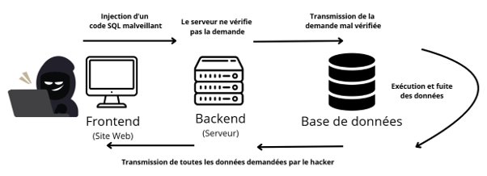

Une injection SQL est une cyberattaque qui a pour but d’attaquer des bases de données, ce sont des serveurs qui enregistrent les informations de vos comptes lorsque vous vous inscrivez sur un site, le but de cette attaque est justement de récupérer ces données (e-mail, mot de passe, etc…). Cette attaque vise les entreprises, mais l’objectif est bel et bien de récupérer les données privées des particuliers utilisant le site web de ces entreprises.
L’injection SQL joue sur une faille informatique dans le backend (le serveur qui va demander les informations à la base de données) pour réussir à extorquer des informations auxquelles ils n’auraient pas accès en temps normal.
Pour réussir à comprendre comment les hackers arrivent à faire cela, il faut comprendre qu’il y a trois acteurs dans ce processus, le frontend (c’est la page web où vous entrez vos informations), le backend (c’est le serveur qui va traiter les informations) et les bases de données.
Mais lorsque le backend est mal configuré et qu’il ne détecte pas les demandes suspectes il va simplement transmettre l’ordre à la base de données qui elle n’a pas d’autre choix que de fournir les informations demandées. Mais ce type d’attaque a peu, voire pas de réussite sur les site web bien configurés. Pour augmenter leurs chances de réussite les hackers essaient de combiner cette attaque avec d’autres, comme l’attaque DDOS, l’objectif est de faire diversion et de permettre à l’injection SQL de ne pas être remarquée
Faisons un exemple général :
Un hacker veut récupérer tous les mots de passe et e-mails des utilisateurs d’un site web. Le site web va lui demander un mot de passe ou un
identifiant, mais le hacker ne va pas donner un mot de passe. Il va plutôt entrer une commande SQL, c’est-à-dire une requête.
Par exemple la requête stipule que "si 1=1, alors envoie-moi les données"’". Si le serveur est mal sécurisé, il va transmettre l’ordre à la base de données. Mais étant donné que 1 est toujours égal à 1 pour tous les utilisateurs, alors elle va renvoyer toutes les données des utilisateurs.
Pour illustrer cela, voici une représentation visuelle simplifiée :

Schéma simplifié d'une attaque d'injection SQL
Pour se protéger des injections SQL il faut surtout ce tourner vers les entreprises.
Par exemple les entreprises peuvent :
Le site web peut être configuré afin d’empêcher aux hackers la possibilité d’entrer certain caractères qui leur permettraient de lancer des requêtes non conformes à l’utilisation normale du site.
Utiliser un pare-feu est une méthode assez classique qui consiste à bloquer le hacker avant même que la requête n’arrive au serveur. Ce système de sécurité va analyser ce qu’entrent les visiteurs dans le formulaire et s’il reconnait une attaque SQL, il va directement bloquer l’utilisateur avant de laisser la requête arrivé au serveurs.
Concernant les particuliers, ils peuvent se protéger en :
La seule chose qui peut être faite par les particuliers, c’est de changer de mot de passe pour chaque site afin que, même si les données fuitent les hackers ne puissent tout de même pas avoir accès à tous vos autres comptes à partir de votre e-mail et de votre mot de passe.